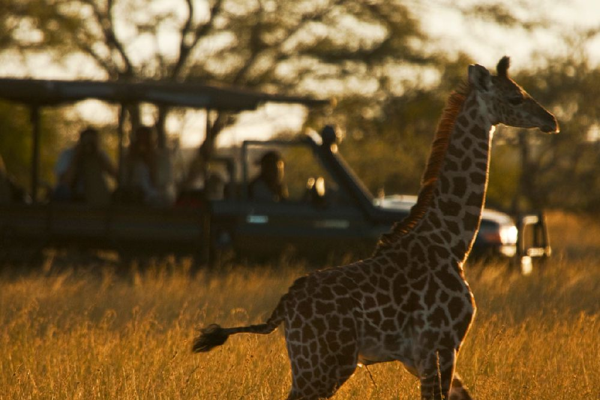
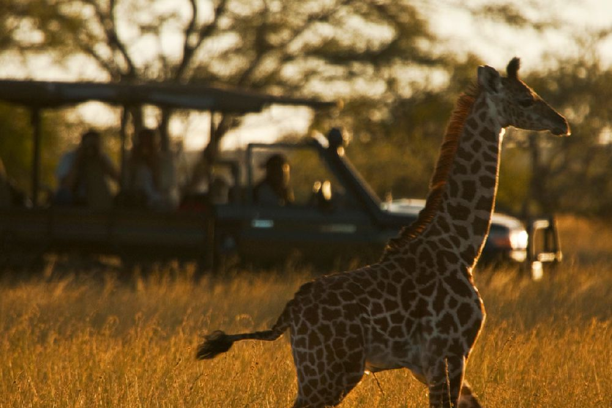

- Home
- Safaris Tours
- The Magnificent Excursions 5 days & 4 nights Tour


 

The Magnificent Excursions 5 days & 4 nights Nights
Trek and hike in these parks with the animals and feel nature embracing you with the magnificent beauty. Hell’s Gate National Park, Lake Nakuru National Park and Maasai Mara National Reserve.
DETAILED ITINERARY
Day 1: Nairobi- Hell's Gate National Park
We start our safari by driving to Hell's Gate National Park, Hell's Gate National Park lies to the sou9th of Lake Naivasha in Kenya, North West of Nairobi. The park, which is mainly, comprised of savannah ecosystem harbours a wide variety of wildlife. There are over 100 species of birds in the park, including vultures, Verreaux's Eagles, augur buzzard and swifts. African buffalo, zebra, eland, hartebeest, Thomson's gazelle, and baboons are also common. Depart in the afternoon to Lake Naivasha which is the highest and the most beautiful of the Rift Valley lakes. Naivasha is yet another area popular for bird watching (over 400 species have been recorded). It is also a favourite weekend retreat for Nairobi residents, who come here to sail, water ski and fish. There are no crocodiles in the lake as the water is too cold for them, due to altitude but there are a number of hippos. Along the lakeshore, vineyards produce grapes for the country's fledgeling wine industry. Dinner and overnight at campsite or lodge.
Day 2: Hell's Gate- Lake Nakuru
Early morning pick up, then drive to Lake Nakuru National Park, across the equator, southwards of Bogoria, lies the rift valleys most famous lake Nakuru. Known all over the world for its flamingos, it's alkaline and is recognized as being one of the natural wonders of the world. Lake Nakuru is now a rhino sanctuary, harbouring a population of over 40 black and over 60 white rhinos, but the flamingoes, of course, have always been the main attraction. At times there may be almost 2million flamingoes in the residence, forming a stunningly beautiful deep pink band around the edge of the lake shore. Arrive in time for lunch then have an afternoon game drive. Dinner and overnight at campsite or lodge.
Day 3: Lake Nakuru National Park-Maasai Mara National
An early morning drive to Maasai Mara National Reserve, it holds on as one of the few places left on earth where wildlife still lives comparatively undisturbed, in the numbers that once roamed the plains and forests of Africa. As the northern tip of the vast Serengeti ecosystem, the Mara hosts the spectacular seasonal migration of many thousands of Wildebeest, Zebras and attendant predators. Arrive in time for lunch then have an afternoon game drive. Dinner and overnight at campsite or lodge.
Day 4: Enjoy Great Mara
After breakfast, we have a full day game drive, with packed lunch provided. The reserve is well known for its black-manned lion, as well as its abundant resident wildlife and its one of the few places where it's possible to see the big five during a morning's game drive. Many of the cheetahs are so tame they seek shelter from the hot sun under one's vehicle and several even climb onto the roof to get a better view of prospective prey. For the bird enthusiast, almost 500 species have been recorded: among these 16 species of eagle, plus many hawks and falcons, 6 species of vultures, 8 species of storks 4 of bustard (including the Kori bustard, the world's heaviest flying bird), and 9 species of sunbirds. Dinner and overnight at campsite or lodge.
Day 5: Maasai Mara National Park- Nairobi
We wake up at 6 am for a sunrise game drive. At 9 am, we drive back to accommodation for brunch then depart to Nairobi. Lunch en-route and arrival in Nairobi in the late afternoon.